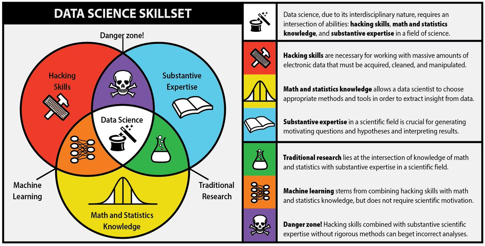
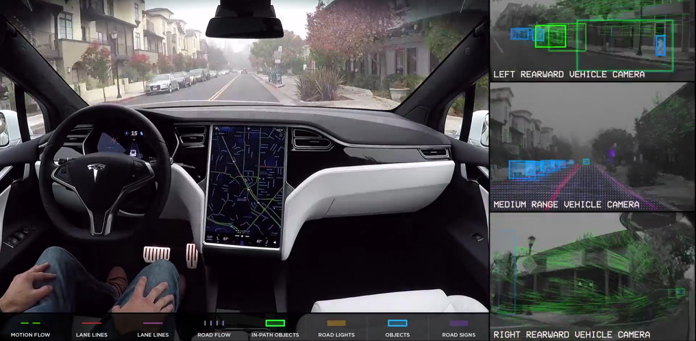
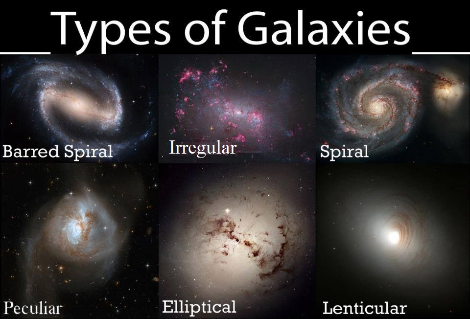
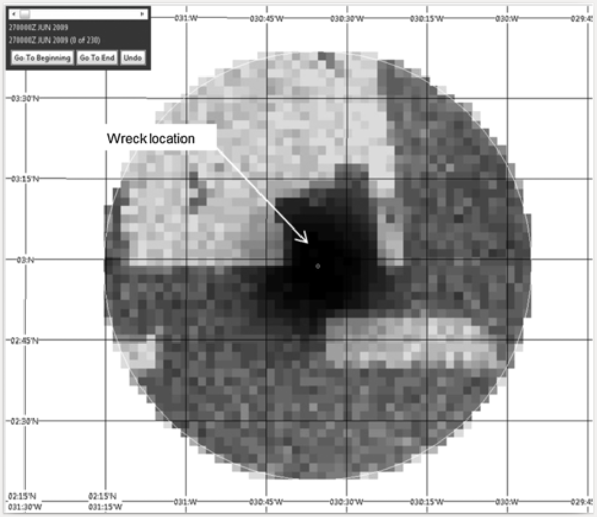
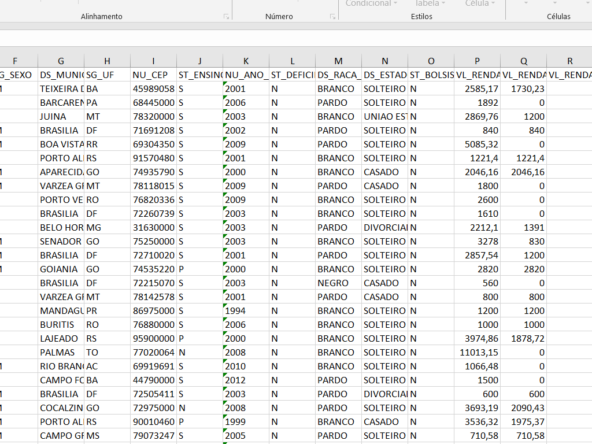
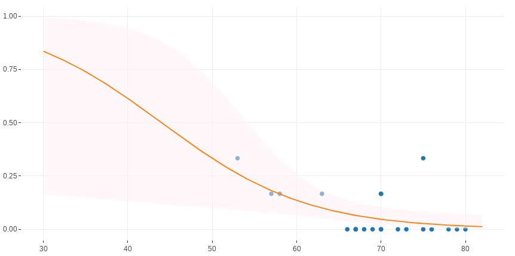

Data Science
A importância da Ciência de Dados para o FNDE
Allan V. C. Quadros - Junho, 2019
"In God we trust. All others must bring data."
W. Edwards Deming
Objetivo
- Mostrar a importância da Ciência de Dados para o FNDE
Objetivos específicos
- Definir o que é Data Science
- Apresentar exemplos de sua aplicação no mundo contemporâneo
- Apresentar exemplos de sua aplicação no FNDE
- Indicar como adquirir esse tipo de conhecimento
O Que é Data Science?
É um campo multidisciplinar que utiliza métodos científicos, processos, algoritmos e sistemas para extrair conhecimento e insights tanto de dados estruturados quanto não-estruturados.
dados
estruturados? ..tabelas, banco de dados..dados
não-estruturados? ..páginas de internet, ex: redes sociais..algoritmos? ..conjunto de rotinas.. \(\rightarrow\)
programação(1º passo - Módulos I e II)
Data Science ... resumindo

Fonte: fusionanalytics.com
Para quê Data Science?
- RESOLVER PROBLEMAS!!
1º passo: programação
Programação= linguagem como qualquer outraNo caso, a que os computadores e máquinas entendem
Voluntário ?
Por que programar?
Por que programar e não utilizar
apenasExcel e outros aplicativos point & click?1) Maior controle sobre o que o programa faz -- ex: bug 17/15 dígitos Excel
2) Maior segurança ao compartilhar e produzir informação -- ex: alterações erradas em tabelas/compartilhar código e não tabela
3) Uma vez aprendida a linguagem, há economia de tempo -- ex: fácil mudar elementos
4) Você pode fazer muito mais coisas -- ex: extração de dados da página do FNDE
Sessão "mão-na-roda"
Data Science é para todos!
- Estatísticos
- Cientistas da Computação
- Matemáticos
- Engenheiros
- Administradores
- Psicólogos
- Médicos
- Advogados
- Pessoas comuns ...
Data Science no Mundo (1)


Data Science no Mundo (2)
Acidente com o AF447 em 2009

Data Science no Mundo (3)
sistemas de recomendação;
reconhecimento facial (desde aplicação policial até diversão no celular: snapchat);
detecção de doenças;
detecção de exoplanetas;
detecção de fraudes (cartão de crédito);
Data Science no setor público
expoentes:
- CGU, Receita, BB
soluções:
- Raspagem diário oficial, detecção de fraudes, estimativa de espera em fila, detecção de lavagem de dinheiro em exportações
E no FNDE?
Como o FNDE lida com o grande volume de dados de seus programas?


Você saberia dizer quanto e o quê o programa com o qual você trabalha retorna para a sociedade?
Algumas iniciativas isoladas
- Malha-Fina FNDE
- FisFa - Fiscaliza Fatura FIES
- Conferência da carteira de títulos do FIES
- Projeções financeiras de arrecadação
- App para controle orçamentário de emendas parlamentares na DIFIN
- Robô para raspagem do Diário Oficial da União
- Capacitação de servidores em Análise de Dados (2 módulos)
Outras ...
Nem tudo foi nem será aproveitado, mas o importante é ter a
liberdadede tentar/buscarsoluções para os problemas.
FisFa - Fiscaliza Fatura FIES
aplicativo para fiscalização das faturas dos AF do Fies
mensalmente: taxa de administração da carteira de financiamento
fatura + base de dados dos alunos (+ 1,7 milhão linhas cada)
valor anual total das faturas ultrapassa R$800 milhões/ano
antes: conferência pro-forma ("amostragem") sem base de referência MEC
indagações constantes de TCU/CGU
Projeto FisFa estruturou base de dados do MEC
tempo de análise: de 2 semanas para < 1 minuto
confiabilidade/robustez
total de economia: > R$ 200 milhões
Programado em
Rinternalizando as regras contratuais2 prêmios: CGU (2016) e ANGC (2018)
FisFa - Fiscaliza Fatura FIES

Malha Fina FNDE
entram 35 mil prestações de contas (PC)
capacidade de análise: ~ 3,5 mil/ano*
permitirá:\(\space\) eliminar passivo de mais de 290 mil PC (em 5 ou 10 anos)
\(\space\) economia de mais de R$ 3 bilhões
\(\space\) economia de mais de meio século de trabalho
taxa de acerto: 90%
Aplicação no FNDE
Como resolver?
Tentativa 1
- 
Tentativa 2
Solução
Utilizar um modelo de classificação (regressão logística)

- Detectou inadimplentes em ~ \(\frac{3}{4}\) das vezes
Desafios a serem atacados ainda
- automação de tarefas -- ex: consultar Documenta, protocolo, fiscalização contratos
- visualização/gerenciamento de dados -- ex: DIFIN/FNDE
- estimativas -- ex: PNLD, PAR, DIFIN
- otimização -- ex: FUNDEB
- monitoramento e avaliação -- ex: AUDIT/DIGAP/DIRAE
Onde obter conhecimento?
- Trilha de capacitação em Data Science do FNDE;
- Internet: MOOCs: Coursera, Udemy, Udacity; Youtube, Khan Academy, Blogs, etc
Obrigado!!
Feito no
 com
com
 e
e
 !!
!!
Apresentação disponíveis no em:
em:
allanvc.github.io/slide_DS_FNDE/
Contato:
Allan V. C. Quadros